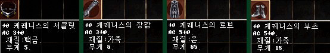
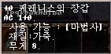

|
2003年2月16日
釋放元素大測試
最近香港伺服器正式開放了釋放元素魔法，這一招可以說是完全地趕盡殺絕了召喚師的生存空間，原因何在？
- 釋放元素可以將召喚的怪物及元素精靈解散，而道具會掉在地上。
- 使用釋放元素在迷魅的寵物時，寵物會變回野生。
- 釋放元素對狗隻是無效的。
- 根據韓國官方網站的資料，釋放元素的命中率為50%+(施法者等級
- 目標怪物等級) * 5%，上限是90%，下限是10%，因此38級或以上的妖精解散食人妖精王的命中率已經有90%。
- 在使用釋放元素後角色會紫名，可以遠距離使用，但不會扣正義值。
- 釋放元素可以在安全區內使用，包括在盟屋及村落中。
- 釋放元素的消費為20MP及一顆精靈玉。
簡單來說，只要一名懂釋放元素的妖精再配合一兩個同伴，便可以安全及輕易地成為召喚師強盜了。另外加上相消變紫，邪惡魔法大幅度地減少正義值後，現在再加上釋放元素後，法師已經沒有任何生存的空間，在此建議各位法師轉玩騎士或妖精。
狗隻也洗血！？
來源：Lineage
Reporter's Club

日本伺服器出現了等級3但有1086血的小臘犬！由此可見狗隻是沒有1000HP的上限（注：玩家角色的HP上限是1000）。究竟牠的主人是用怎樣的方法幫他洗血呢？有關方法並不是單純的升降等級，可能涉及遊戲中的Bug及設定漏洞，由此本網不便描述，而目前在日本及香港伺服器上已經不能再用此方法洗血了。（台灣伺服器可能仍然可以使用）
惡魔套裝加成資料
來源：Lineage
Reporter's Club
日本伺服器的Energy成功地集齊了一套惡魔套裝，他發覺得在穿著惡魔套裝後回血量明顯地增加了，12體質的法師回血量由1提升至6，而18體質的則由1至6提升至6至11（大約每2-3秒回血一次），由此可見惡魔套裝除了有-2防及變身為惡魔外，還有回血量固定+5的加成呢！
魔女賽妮絲套裝能力值改變
來源：Minimomi's
Lineage
在早前韓國官方網站所公佈的魔女賽妮絲套裝如下：

當中所受歡迎的可算是手套（法師的水晶手套）及長靴（比+7鋼靴更輕），原先賽妮絲手套的防禦力為3，但最近韓國有玩家成功打到賽妮絲手套，他發覺得能力值與官方公佈的不同，如下：

防禦力由3改為1，並註明職業是法師，相信其他的賽妮絲套裝也有可能會改變，尤其是防禦力有5的賽妮絲長靴。
|